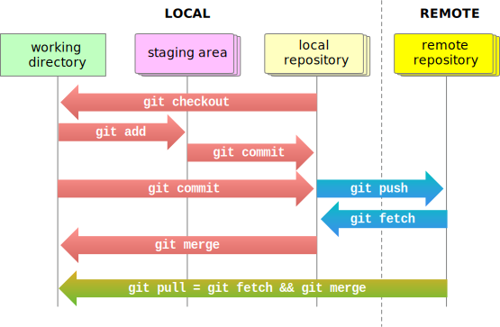

flowchart LR
A[Version 1] --> B[Version 2] --> C[Version 3]--> D[...]
Version control with git
Aims
- Initialise a local
gitrepository - Add files to track
- Commit some changes
Learning outcomes
- Understand the general principles of version control
- Mastery of how
gitimplements the main features of version control
General ideas about version control
Version control is an approach to coding that allows you to keep track of the code evolution.
You may think of coding as a linear process, where a first version is followed by another more advanced version, which is again followed by a successive more refined version and so on.
This is not at all the case. In fact, as we develop our code we tyically try various ideas, similarly to what you would do if you were writing a novel, perform an experiment, or explore an uncharted territory.
flowchart LR
A[Version 1] --> B
B[Version 2] --> C[Version 3]--> D[...]
A-->Aa[Variant 1.a]-->B
A-->Ab[Variant 1.b]-->E[Alternative version 2]-->C
This is even more evident when collaboration is at play: different developers will try different approaches and require a system to keep track of their respective modifications and that helps them with bringing them together into a unified project. In fact, regularly, the various ideas need to come together and merge for the project to keep its unitary structure.
Version control tools serve precisely this purpose, and git is the most popular of such tools.
It is powerful, but its usage can be subtle at times, as illustrated by the following cartoon:

Version control therefore solves two problems:
- keeping track of the code changes performed by a single performs
- allow to harmonise and synchronise the code changes of various collaborators
We are going to focus mostly on the first part, but it is important to realise that git is an essential tool for code development in large projects.
Terminology
Repositories
Version control use repositories. These are a database of code versions, stored in an efficient manner, focusing on the changes between a version and another.
Clones
Each user of the repository has their own working copy of all the files (any kinds of files) of the project. This clone of the repository is typically stored on the local machine.
Changes to the local clone are not reflected in the repository unless the users explicitly require this to be the case.
Distributed version control
In distribute version control each user has a complete copy of the repository, and they can perform their changes independently from other users, work locally and offline and eventually do collaborative work by merging their own versions with the one of others.
In principle, this can be done without a central server (e.g. peer to peer). In practice, one often uses some form of online repository, e.g. Github, Gitlab etc.
Branch
Branching in git allow you to explore various ideas in parallel, developing in different directions and experimenting new features. Branching is a backbone ides in git.
A repository typically has a main branch where the functional code is stored. When we want to develop our code we create new feature branches
%%{init: { 'logLevel': 'debug', 'theme': 'default' , 'themeVariables': {
'git0': '#ff0000',
'git1': '#00ff00',
'git2': '#0000ff',
'git3': '#ff00ff',
'git4': '#00ffff',
'git5': '#ffff00',
'git6': '#ff00ff',
'git7': '#00ffff'
} } }%%
gitGraph
commit id: "main"
branch feature
commit id: "main work"
checkout feature
commit id: "feature work"
checkout main
commit id: "more main work"
merge feature
On every branch, we can store out individual advancements as commits (see below). Eventually, when we are happy for our feature to be integrated with the main branche, we merge the feature branch with the main branch.
Commits
When you want a change to be registered in the repository’s database, your commit your changes to the repository. This means that a new entry in the database is added, keeping track of a timestamp associated with your changes and (often) an explanatory description of what the modification entails.
Pushing [with the remote repository only]
If you also have a remote repository (e.g. on GitHub), you can synchronise the changes between the local branch and the remote branch via the push operation.
Fetching [with the remote repository only]
Fetch allows you to retrieve the changes from a remote repository, see them and decide whether to merge such changes with your local repository (or not).
Pulling [with the remote repository only]
Pulling is simply fetching, followed by automatic merging.
Bundling
An efficient way to produce a package out of a git repository is to construct a bundle. This is a single file that contains a collection of commits, branches and logs allowing you to transfer or store the repository’s content without requiring access to a remote server.
Scheme

git works, adapted from https://homes.cs.washington.edu/~mernst/advice/version-control.html ↗️Hands-on approach to git
We start off working locally and creating a local project.
To-dos
Previously, you should have created a project folder with a README.md file. We now want to setup our local git repository.